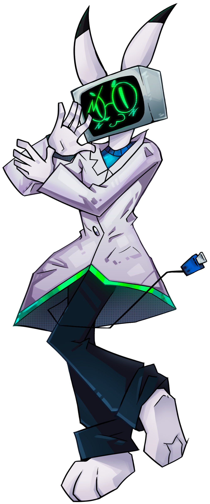
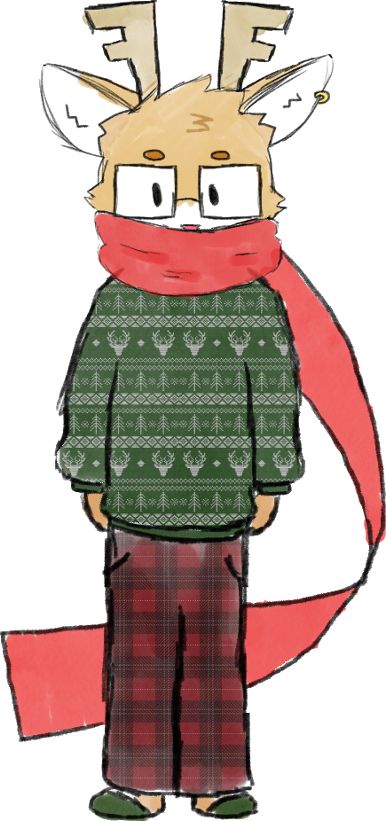
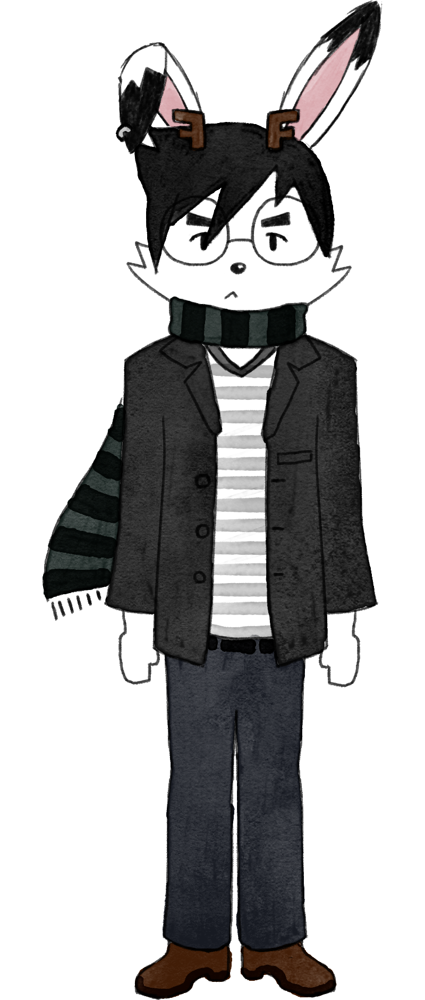

Rogues' Gallery
(Meet my OCs)
Welcome to the rogues' gallery. This page features portraits and descriptions for some of the most wanted criminals in all of Nekoweb.
Okay, all jokes aside, this page is a collection of all my OCs and sonas and their respective ref sheets and drawings. Thank you for taking interest in my little menagerie (pun intended)
If you're at all interested in doing anything with one of these guys, first of all: holy shit, thank you!! Second of all: I'm generally pretty lax with how you choose to depict these lads, but for the sake of clarity...
| Can I... | Answer: |
|---|
| Make fan works (art, fanfiction, etc.) featuring these characters? | Yes please! |
| Make works with mature themes featuring these characters? | Go ahead! |
| Make NSFW/R-18 works featuring these characters? | Unless you or the character you wish to depict are underage, feel free to do so. |
| Make commercial/for-profit works featuring these characters? | Ask me first. |
| Make works that feature extreme fetishes or excessive gore where these characters are the central focus | Please don't. |
If you have any questions about any of this or otherwise just need some clarification, please feel free to contact me via e-mail.
P.S: Any drawings featured here that don't have a credited artist were drawn by me!
- WANTED -
Miraitech Prototype Model KV-480 "Kanae"

- Sex: Male
- Height: 180cm
- Age: Unknown (At least 100)
- Species: Robot
- Last seen: Manning his item shop in sb_parklands
- Crimes: Arrest evasion and accomplice to multiple counts of fraud and possession of illegal firearms
BOUNTY: 100,000 IC
KV-480 is the accomplice and partner to the infamous interdimensional criminal known by the pseudonym of "The Iron Maiden". He is far less dangerous than the former, dedicating himself to tending to their shared traveling shop wherein he sells general equipments and materials, and the maiden pedals her heavily modified lethal firearms. He is well skilled at evading law enforcers, seemingly being able to transport himself and the caravan which acts as their business through dimensions at will.
Ah, yes, good ol' Kanae. One of my first ever OCs I still keep around to this day. He was actually originally designed to just be my fursona back in 2020, but eventually I just kept developing his personality and story so much I just couldn't really relate to him anymore. At some point, he got absorbed into my partner's game project as a minor character, but I think his description here has already spilled enough beans about that upcoming project, so I won't be sharing any more info on that aspect of him :p
- WANTED -
Naoki Ishihara

- Sex: Male
- Height: 192cm
- Age: 21
- Species: Jackalope
- Last seen: Wandering between multiple stores in quick succession; likely working one of his many odd jobs
- Crimes: Tax evasion and multiple counts of digital piracy
BOUNTY: 500 IC (Least concern)
Naoki Ishihara is a university student, currently majoring in English, in hopes of becoming a fiction author. Despite being very poor, he insists on living by himself, not wanting to rely on his parents for housing. As such, he frequently takes many odd jobs to barely make ends meet, even if "ends meet" doesn't necessarily include paying taxes or not committing piracy.
Naoki is my current main fursona. He was intentionally designed as more of a truesona than a standalone character like my previous ones, so he doesn't necessarily have a set personality or backstory. Lad's just kinda me as a jackalope lol
- MISSING -
Have you seen these characters?
Hoo,boy... This section...
So, as anyone who went on the old version of this page can tell you, I have a pretty terrible habit of designing a character to act as a fursona or avatar, giving them a backstory and a personality that gradually shits away from mine to the point I don't really see myself in them anymore, and then just letting go of the character.
Some, like Kanae, get upgraded to OC status, getting to live their life in my creative ventures. But others... Well, they end up here.
Roland

- Sex: Male
- Height: 180cm
- Age: 24
- Species: Reindeer
- Last seen: Holiday 2023
- Reason for retirement: Couldn't make him work outside of the holiday season.
Let's start with probably the most egregious example right away. Poor, poor Roland.
He was designed around holiday 2023 as an offshoot of a character I made for my partner's project who still hasn't shown up yet (lol)
His sole personality trait was liking winter/the holidays. Obviously, the gimmick got old as soon as that season passed. I tried redesigning him a few times to get rid of the whole holiday aesthetic but that just felt... Wrong. So he was ultimately just shelved.
Haruo Hanamura

- Sex: Male
- Height: 165cm
- Age: ??
- Species: Jackalope (Arctic Hare + Dragon Hybrid)
- Last seen: Early 2025
- Reason for retirement: Felt too young
Haruo actually got to be my main sona for quite a bit. I designed him in early 2024, right after I first retired Roland. Much like all my other sonas, he didn't originally have a personality, and unfortunately he never really got one...
That's because he's a special case. When I designed Haruo, I was only 19 years old, and largely still saw myself as a teenager back then. Then, around the time I turned 20, some Major Life Things™ happened which required some immediate maturing on my part. By the end of it all, having a character that just looked so young felt DEEPLY icky.
James "Vermillion" Kobayashi

"I don't think I ever saw him with any friends or family. His house was always empty. Never had any guests or nothing. Kind of a quiet guy. Wasn't really standoffish or nothing, just sorta... Lonely, y'know?
I mean, don't get me wrong, it's a shame the guy's gone and all but... Part of me wonders if he'll even have anyone to mourn him..."
"Actually can you guys cut that last part out, I didn-
[Click]


{kind=link}
{kind=link}
{kind=link}
{kind=link}
{kind=link}